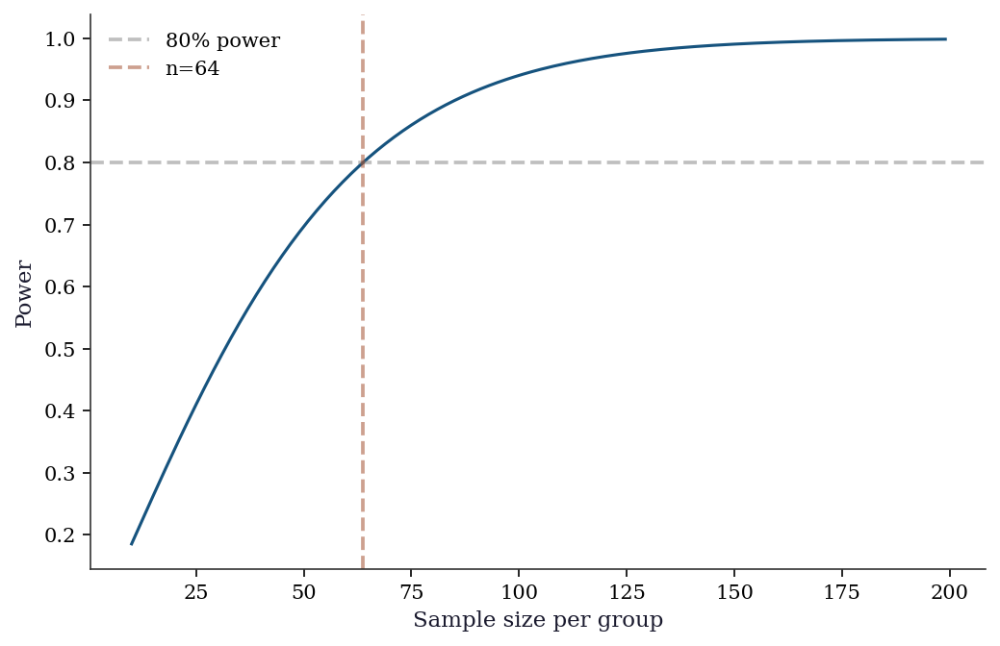

import numpy as np
from scipy import stats, linalg
import matplotlib.pyplot as plt
plt.style.use('assets/book.mplstyle')24 Prerequisites Appendix
This appendix is a reference, not a tutorial. It gathers the foundational material assumed by the main chapters in one place, with pointers to where each topic is used.
Floating Point and Conditioning
Every computation in this book runs on IEEE 754 double-precision floating point. Key facts:
- Machine epsilon: \(\epsilon_{\text{mach}} \approx 2.2 \times 10^{-16}\). Two numbers closer than this are indistinguishable.
- Catastrophic cancellation: \(a - b\) when \(a \approx b\) loses significant digits. This is why
np.logaddexp(0, x)is preferred overnp.log(1 + np.exp(x))for the log-sigmoid function. - Condition number: \(\kappa(\mathbf{A}) = \|\mathbf{A}\| \cdot \|\mathbf{A}^{-1}\|\). A linear system \(\mathbf{Ax} = \mathbf{b}\) amplifies input errors by a factor of \(\kappa\). Used in: Ch. 2 (optimizer convergence), Ch. 11 (multicollinearity via VIF).
print(f"Machine epsilon: {np.finfo(float).eps:.2e}")
print(f"Condition number of Hilbert(5): {np.linalg.cond(linalg.hilbert(5)):.0f}")
print(f"Condition number of Identity(5): {np.linalg.cond(np.eye(5)):.1f}")Machine epsilon: 2.22e-16
Condition number of Hilbert(5): 476607
Condition number of Identity(5): 1.0Dense Linear Algebra
24.1 Key decompositions
| Decomposition | scipy function | Cost | Used in |
|---|---|---|---|
| LU | linalg.lu |
\(O(n^3)\) | Linear systems |
| QR | linalg.qr |
\(O(mn^2)\) | OLS (Ch. 11) |
| Cholesky | linalg.cholesky |
\(O(n^3/3)\) | Positive definite systems |
| SVD | linalg.svd |
\(O(mn^2)\) | PCA (Ch. 19), pseudoinverse |
| Eigendecomposition | linalg.eigh |
\(O(n^3)\) | PCA, MANOVA |
A = np.array([[4, 2], [2, 3]], dtype=float)
L = linalg.cholesky(A, lower=True)
print(f"Cholesky: L @ L.T = A? {np.allclose(L @ L.T, A)}")
U, S, Vt = linalg.svd(A)
print(f"SVD singular values: {S.round(3)}")
print(f"Condition number: {S[0]/S[1]:.3f}")Cholesky: L @ L.T = A? True
SVD singular values: [5.562 1.438]
Condition number: 3.866References: Trefethen and Bau (1997), Golub and Van Loan (2013).
Probability Distributions in SciPy
All distributions in scipy.stats follow the same API:
from scipy.stats import norm, t, chi2, f, gamma, beta, expon, poisson
# Continuous
rv = norm(loc=0, scale=1) # create frozen distribution
rv.pdf(x) # density
rv.cdf(x) # CDF
rv.ppf(q) # quantile (inverse CDF)
rv.rvs(size=n, random_state=rng) # random samples
rv.mean(), rv.var() # moments
rv.interval(0.95) # 95% equal-tailed interval
rv.fit(data) # MLE of parameters
# Discrete
rv = poisson(mu=5)
rv.pmf(k) # probability mass function# Common distributions used in the book
distributions = {
'Normal(0,1)': stats.norm(0, 1),
'Student t(5)': stats.t(df=5),
'Chi-sq(3)': stats.chi2(df=3),
'Exp(1)': stats.expon(scale=1),
}
print(f"{'Distribution':<15} {'Mean':>8} {'Var':>8} {'95% CI':>20}")
for name, rv in distributions.items():
ci = rv.interval(0.95)
print(f"{name:<15} {rv.mean():>8.3f} {rv.var():>8.3f} "
f"{'({:.2f}, {:.2f})'.format(*ci):>20}")Distribution Mean Var 95% CI
Normal(0,1) 0.000 1.000 (-1.96, 1.96)
Student t(5) 0.000 1.667 (-2.57, 2.57)
Chi-sq(3) 3.000 6.000 (0.22, 9.35)
Exp(1) 1.000 1.000 (0.03, 3.69)Parametric Hypothesis Testing
24.2 The \(t\), \(F\), and \(\chi^2\) tests
These are the building blocks for Wald, score, and LR tests (Ch. 10).
# One-sample t-test
rng = np.random.default_rng(42)
x = rng.normal(0.5, 1, 30) # true mean = 0.5
t_stat, t_pval = stats.ttest_1samp(x, 0)
print(f"t-test (H0: mu=0): t={t_stat:.3f}, p={t_pval:.4f}")
# Two-sample t-test
y = rng.normal(0, 1, 30)
t2_stat, t2_pval = stats.ttest_ind(x, y, equal_var=False)
print(f"Welch t-test: t={t2_stat:.3f}, p={t2_pval:.4f}")
# Chi-squared test
observed = np.array([45, 35, 20])
expected = np.array([40, 40, 20])
chi2_stat, chi2_pval = stats.chisquare(observed, expected)
print(f"Chi-sq test: stat={chi2_stat:.3f}, p={chi2_pval:.4f}")t-test (H0: mu=0): t=3.644, p=0.0010
Welch t-test: t=1.974, p=0.0532
Chi-sq test: stat=1.250, p=0.5353Nonparametric Tests
# Mann-Whitney U (two-sample, no normality assumption)
u_stat, u_pval = stats.mannwhitneyu(x, y, alternative='two-sided')
print(f"Mann-Whitney U: stat={u_stat:.1f}, p={u_pval:.4f}")
# Kolmogorov-Smirnov (distribution comparison)
ks_stat, ks_pval = stats.kstest(x, 'norm', args=(x.mean(), x.std()))
print(f"KS test (normality): stat={ks_stat:.3f}, p={ks_pval:.4f}")
# Shapiro-Wilk (normality)
sw_stat, sw_pval = stats.shapiro(x)
print(f"Shapiro-Wilk: stat={sw_stat:.3f}, p={sw_pval:.4f}")Mann-Whitney U: stat=593.0, p=0.0351
KS test (normality): stat=0.114, p=0.7929
Shapiro-Wilk: stat=0.965, p=0.4161Correlation and Dependence
x_corr = rng.standard_normal(100)
y_corr = 0.7 * x_corr + 0.3 * rng.standard_normal(100)
# Pearson (linear)
r, p = stats.pearsonr(x_corr, y_corr)
print(f"Pearson: r={r:.3f}, p={p:.4f}")
# Spearman (rank)
rho, p_s = stats.spearmanr(x_corr, y_corr)
print(f"Spearman: rho={rho:.3f}, p={p_s:.4f}")
# Kendall (concordance)
tau, p_k = stats.kendalltau(x_corr, y_corr)
print(f"Kendall: tau={tau:.3f}, p={p_k:.4f}")Pearson: r=0.910, p=0.0000
Spearman: rho=0.898, p=0.0000
Kendall: tau=0.729, p=0.0000Power and Sample Size
Statistical power = probability of detecting a true effect.
For a two-sample \(t\)-test with effect size \(d = (\mu_1 - \mu_2)/\sigma\):
from statsmodels.stats.power import TTestIndPower
power_analysis = TTestIndPower()
# Sample size for 80% power, effect size d=0.5, alpha=0.05
n_needed = power_analysis.solve_power(
effect_size=0.5, alpha=0.05, power=0.8, alternative='two-sided',
)
print(f"Sample size needed (per group): {n_needed:.0f}")
# Power for n=50 per group
power = power_analysis.solve_power(
effect_size=0.5, alpha=0.05, nobs1=50, alternative='two-sided',
)
print(f"Power with n=50: {power:.3f}")
# Power curve
fig, ax = plt.subplots()
ns = np.arange(10, 200)
powers = [power_analysis.solve_power(0.5, alpha=0.05, nobs1=n_,
alternative='two-sided') for n_ in ns]
ax.plot(ns, powers, color="C0", linewidth=1.5)
ax.axhline(0.8, color="gray", linestyle="--", alpha=0.5, label="80% power")
ax.axvline(n_needed, color="C1", linestyle="--", alpha=0.5,
label=f"n={n_needed:.0f}")
ax.set_xlabel("Sample size per group")
ax.set_ylabel("Power")
ax.legend()
plt.show()Sample size needed (per group): 64
Power with n=50: 0.697
Random Number Generation
The book uses the modern numpy.random.Generator API exclusively (STEERING.md §5.2). The legacy np.random.seed() / np.random.randn() API is never used.
# The canonical pattern
rng = np.random.default_rng(42)
# Key methods
print(f"Normal: {rng.standard_normal(3).round(3)}")
print(f"Uniform: {rng.uniform(0, 1, 3).round(3)}")
print(f"Poisson: {rng.poisson(5, 3)}")
print(f"Binomial: {rng.binomial(10, 0.3, 3)}")
print(f"Choice: {rng.choice([1, 2, 3, 4], 3, replace=True)}")
# Reproducibility
rng1 = np.random.default_rng(42)
rng2 = np.random.default_rng(42)
print(f"\nReproducible: {np.array_equal(rng1.standard_normal(5), rng2.standard_normal(5))}")Normal: [ 0.305 -1.04 0.75 ]
Uniform: [0.697 0.094 0.976]
Poisson: [7 3 9]
Binomial: [2 4 4]
Choice: [2 4 2]
Reproducible: TrueKey difference from legacy API: Generator uses the PCG64 PRNG (better statistical properties than Mersenne Twister). Each Generator instance maintains its own state, so multiple generators can run independently without global state conflicts.